가공장비 현황
표를 좌우로 밀어 나머지 항목을 볼 수 있습니다.
| Facility | Capacity | Q’ty | Installed Date | Maker |
|---|---|---|---|---|
| Lathe | Φ850 × 4000(L) | 1 | Apr. 2007 | Danita |
| Lathe | Φ580 × 2000(L) | 1 | May. 2004 | 화천기계 |
| Lathe | Φ460 × 1000(L) | 1 | May. 2004 | 화천기계 |
| CNC Lathe | PUMA 300 (12”) | 1 | May. 2005 | 두산인프라코어 |
| CNC Lathe | PUMA CT 300 (10”) | 1 | Oct. 2007 | 두산인프라코어 |
| Milling Machine | DMB-45 (U5호) | 1 | May. 2004 | 두산인프라코어 |
| Radial Drill M/C | 2,000(L) | 1 | Apr. 2004 | Nambuk |
| Co2 Welding M/C | TR-650 | 2 | July. 2008 | Taesin |
| TIG Welding M/C | WS-ADT(500S) | 1 | July. 2008 | Taesin |
| Co2/MAG Welding M/C | MAX 800C | 1 | Apr. 2009 | Easywel |
| Lathe | Φ1500 × 10000(L) | 1 | Nov. 2009 | Dainichi |
| Hoist Crane | 15 Ton | 1 | Dec. 2009 | 신성 |
| Hoist Crane | 5 Ton | 1 | Dec. 2009 | 신성 |
| Hydraulic test M/C | pressure 700bar | 1 | Dec. 2009 | 동양하이드텍 |
| Air compressor | 10HP | 2 | Nov. 2009 | 대동 |
| Paint booth | — | 1 | Nov. 2009 | 태일산업 |
| CNC Lathe | Φ850 × 3000(L) | 1 | May. 2005 | Danita |
| 정반 | 500 × 2000 | 1 | Jan. 2010 | 나우하이텍 |
계측기 현황
표를 좌우로 밀어 나머지 항목을 볼 수 있습니다.
| Facility | Capacity | Q’ty | Installed Date | Maker |
|---|---|---|---|---|
| 도막 두께 측정기 | 0~0.5mm | 1 | 2005 | Mitutoyo(Japan) |
| Micrometer | 0~25mm | 3 | 2002 | Mitutoyo(Japan) |
| Micrometer | 25~50mm | 3 | 2002 | Mitutoyo(Japan) |
| Micrometer | 50~75mm | 3 | 2002 | Mitutoyo(Japan) |
| Micrometer | 75~100mm | 3 | 2002 | Mitutoyo(Japan) |
| Micrometer | 100~125mm | 2 | 2002 | Mitutoyo(Japan) |
| Micrometer | 125~150mm | 3 | 2008 | Mitutoyo(Japan) |
| Micrometer | 150~175mm | 1 | 2009 | Mitutoyo(Japan) |
| Micrometer | 150~300mm | 1 | 2002 | Mitutoyo(Japan) |
| Micrometer | 300~400mm | 1 | 2009 | Mitutoyo(Japan) |
| Micrometer | 400~500mm | 1 | 2009 | Mitutoyo(Japan) |
| Micrometer | 600~700mm | 1 | 2009 | Mitutoyo(Japan) |
| Micrometer | 700~800mm | 1 | 2009 | Mitutoyo(Japan) |
| Cylinder gauge | 18~35mm | 2 | 2002 | Mitutoyo(Japan) |
| Cylinder gauge | 35~60mm | 3 | 2002 | Mitutoyo(Japan) |
| Cylinder gauge | 50~100mm | 2 | 2002 | Mitutoyo(Japan) |
| Cylinder gauge | 160~250mm | 1 | 2002 | Mitutoyo(Japan) |
| Cylinder gauge | 250~400mm | 1 | 2002 | Mitutoyo(Japan) |
| Inside micrometer | 50~1000mm | 1 | 2009 | Mitutoyo(Japan) |
| Vernier Height gauge | 0~300mm | 1 | 2002 | Mitutoyo(Japan) |
| Vernier Height gauge | 0~600mm | 1 | 2002 | Mitutoyo(Japan) |
| 정반 | 300 × 1000 × 2000 | 1 | 2002 | 나우하이텍 |
| Inside micrometer | 0~150mm | 1 | 2009 | Mitutoyo(Japan) |
| Vernier Calipers | 0~300mm | 6 | 2009 | Mitutoyo(Japan) |
| Vernier Calipers | 0~600mm | 2 | 2009 | Mitutoyo(Japan) |
| Vernier Calipers | 0~1000mm | 1 | 2009 | Mitutoyo(Japan) |
설비 사진
부산 화전산단 공장에 설치된 주요 가공·검사 설비입니다.
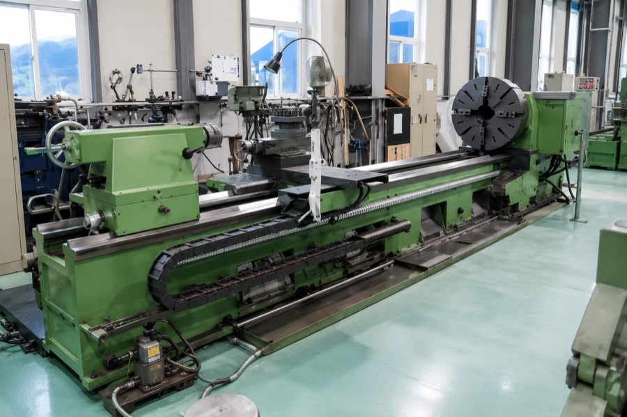
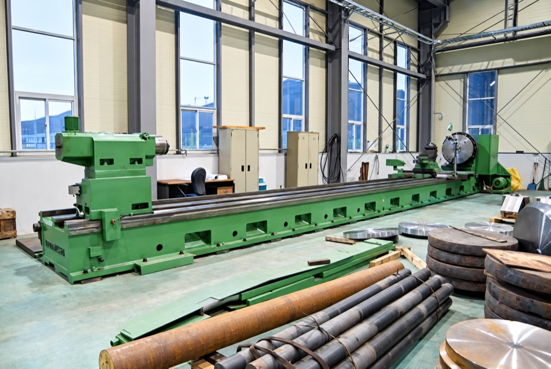
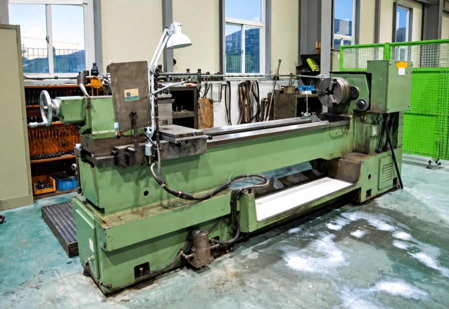
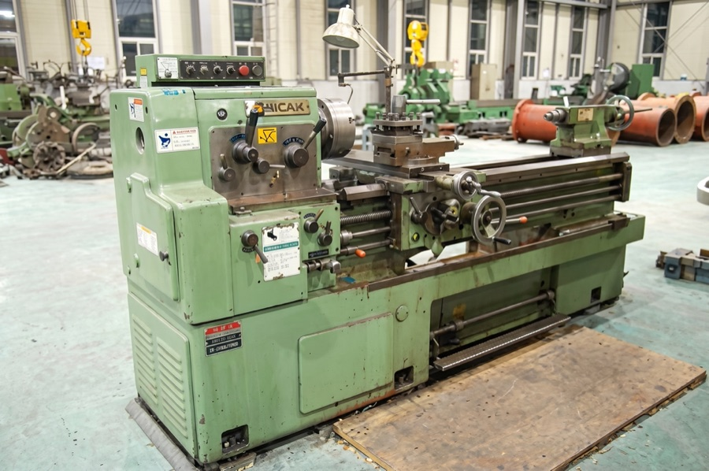
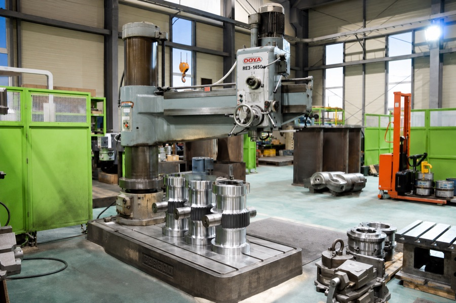
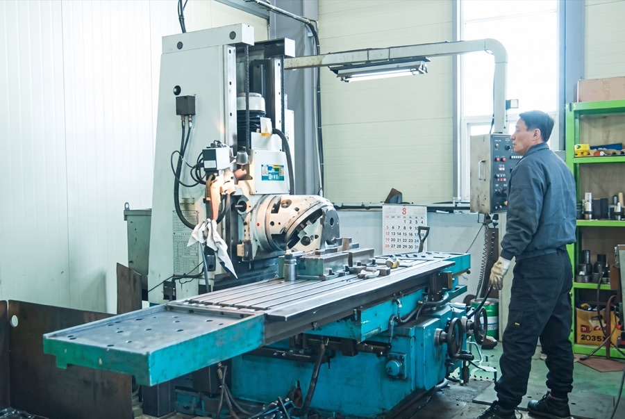
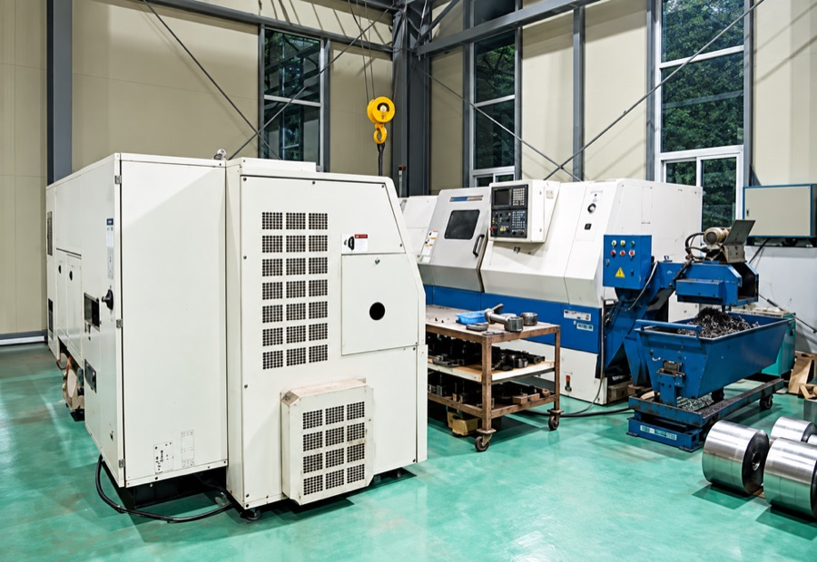
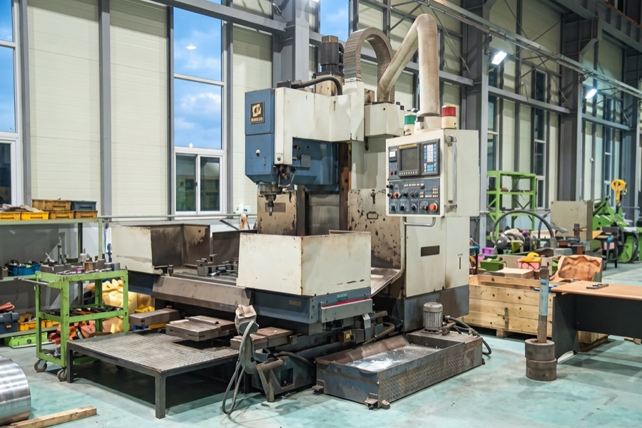
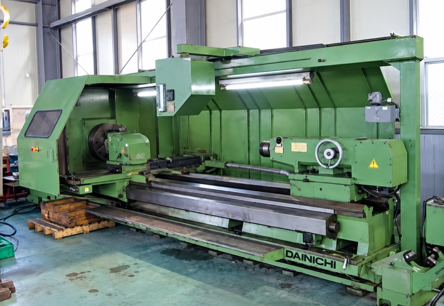
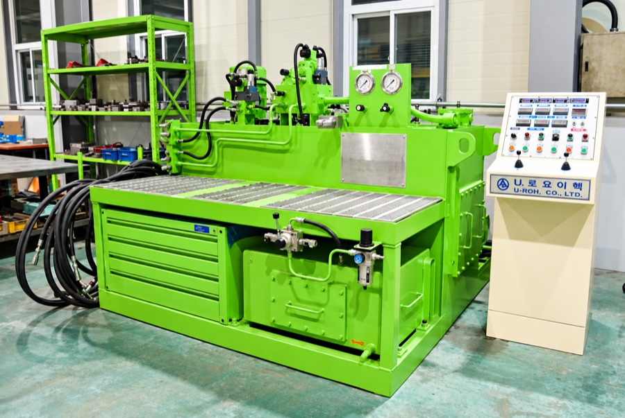
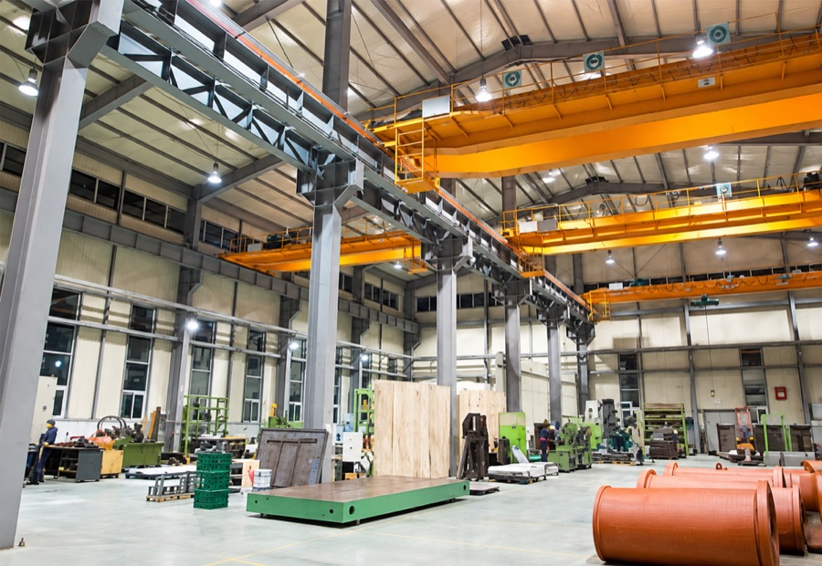
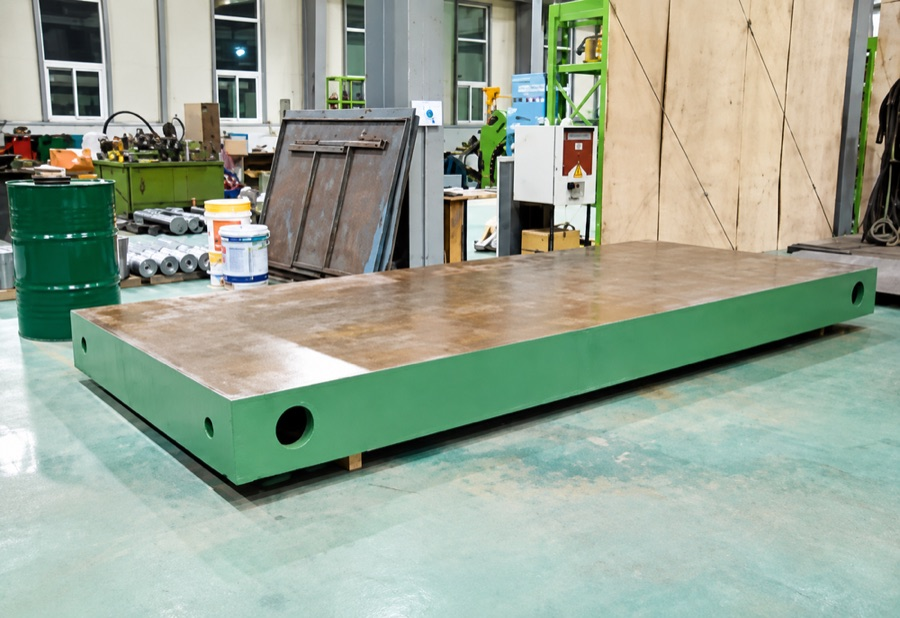
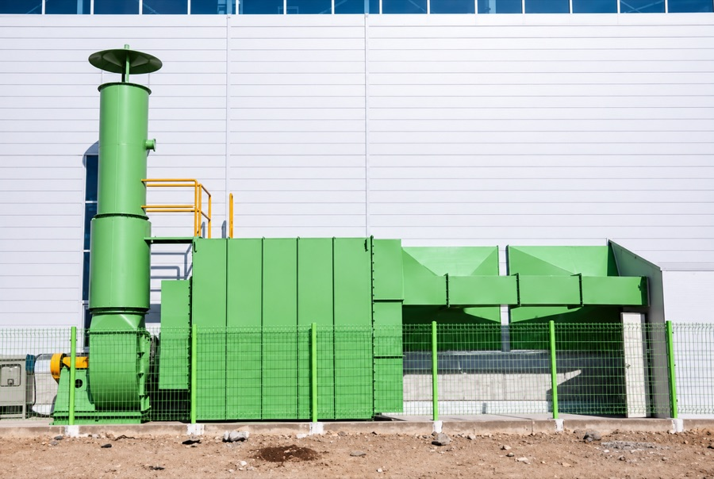